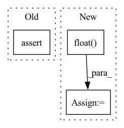

Pattern ID :1157
Before Change
if self._rot_type == "quat":
assert self._rot.shape[-1] == 4, "wrong quaternion shape"
// norm == 1
assert _is_normalized(self._rot, dim=-1), "quaternion is not unit"
elif self._rot_type == "rmat":
if self._rot.shape[-1] == 3:
if self._rot.shape[-2] == 3: // 3x3 matrixAfter Change
assert isinstance(self._rot, torch.Tensor), "rotation must be a tensor"
// let"s always make rotation in float32
// otherwise quat won"t be unit, and rmat won"t be orthogonal
self._rot = self._rot.float()
if self._rot_type == "quat":
assert self._rot.shape[-1] == 4, "wrong quaternion shape"
// quat with norm == 0 are padded, make them (1, 0, 0, 0)
self._process_zero_quat()In pattern: SUPERPATTERN
Frequency: 3
Non-data size: 3
Instances Fragment ID: 5854857
Project Name: wuziyi616/multi_part_assembly
Commit Name: 882efe5a04bd0573c62149078f63d036613f07c9
Time: 2022-06-28
Author: dazitu616@gmail.com
File Name: multi_part_assembly/utils/rotation.py
M Class Name: Rotation3D
N Class Name: Rotation3D
M Method Name: _check_valid(1)
N Method Name: _check_valid(1)
M Parent Class:
N Parent Class:
M File Name: multi_part_assembly/utils/rotation.py
N File Name: multi_part_assembly/utils/rotation.py
M Start Line: 126
M End Line: 130
N Start Line: 140
N End Line: 153
Before Change
dtype=dtype,
device=edge_index.device)
edge_weight = edge_weight.view(-1)
assert edge_weight.size(0) == edge_index.size(1)
row, col = edge_index
deg = th.zeros(num_nodes, dtype=edge_weight.dtype, device=edge_weight.device)
deg.scatter_add_(0, col, edge_weight)After Change
return norm_H
def norm(self, g):
in_deg = g.in_degrees(range(g.number_of_nodes())).float()
norm = 1.0 / in_deg
norm[th.isinf(norm)] = 0
g.ndata["norm"] = norm
g.apply_edges(fn.e_mul_v("w_sum", "norm", "w_sum")) Fragment ID: 5854856
Project Name: bupt-gamma/openhgnn
Commit Name: 8016ba01e4b52c66fa9de0a944ddd043fa0d9b57
Time: 2021-05-24
Author: theheavenszhao@outlook.com
File Name: openhgnn/models/GTN_sparse.py
M Class Name: GTN
N Class Name: GTN
M Method Name: norm(2)
N Method Name: norm(6)
M Parent Class: BaseModel
N Parent Class: BaseModel
M File Name: openhgnn/models/GTN_sparse.py
N File Name: openhgnn/models/GTN_sparse.py
M Start Line: 61
M End Line: 74
N Start Line: 53
N End Line: 59
Before Change
def multiclass_dice_coeff(input: Tensor, target: Tensor):
assert input.size() == target.size()
dice = 0
// remove backgroud region
for channel in range(1, input.shape[1]):
After Change
def multiclass_dice_coeff(input: Tensor, target: Tensor):
Batchsize, Channel = input.shape[0], input.shape[1]
y_pred = input.float() .contiguous().view(Batchsize, Channel, -1)
y_true = target.long().contiguous().view(Batchsize, -1)
y_true = F.one_hot(y_true, Channel) // N,H*W -> N,H*W, C
y_true = y_true.permute(0, 2, 1) // H, C, H*W
Fragment ID: 5854855
Project Name: junqiangchen/pytorchdeeplearing
Commit Name: 4c0130e39ce545780538b929f1a87c71404de340
Time: 2022-07-12
Author: 1207173174@qq.com
File Name: model/metric.py
M Class Name: AnonimousClass
N Class Name: AnonimousClass
M Method Name: multiclass_dice_coeff(2)
N Method Name: multiclass_dice_coeff(2)
M Parent Class:
N Parent Class:
M File Name: model/metric.py
N File Name: model/metric.py
M Start Line: 33
M End Line: 37
N Start Line: 34
N End Line: 43